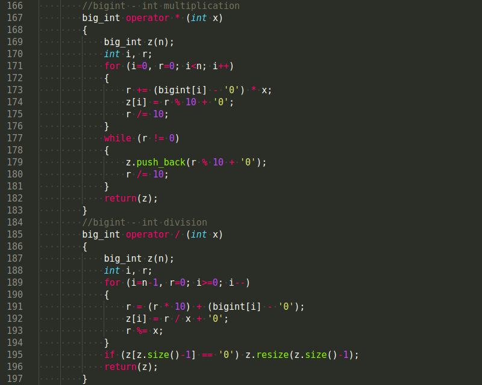
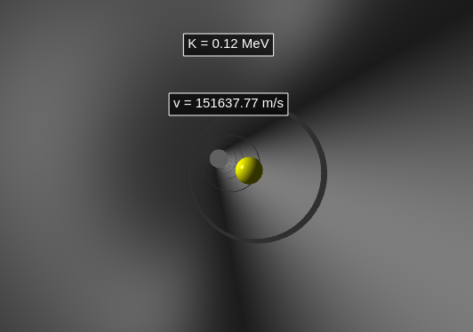
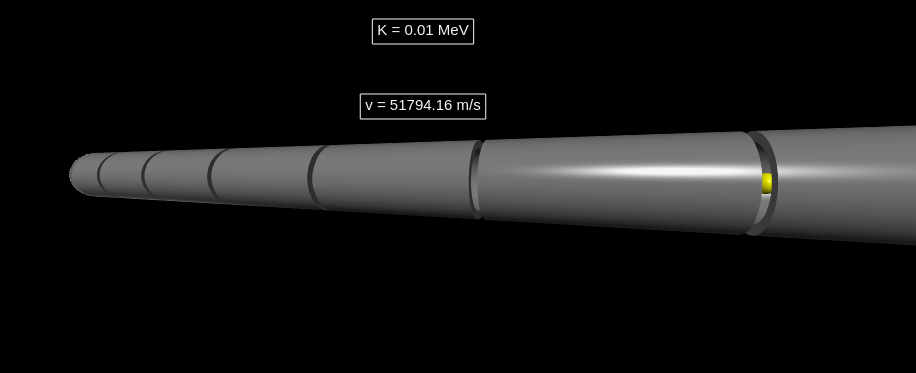
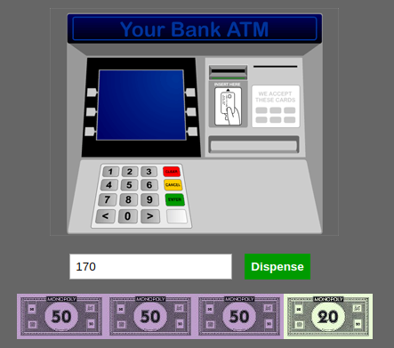
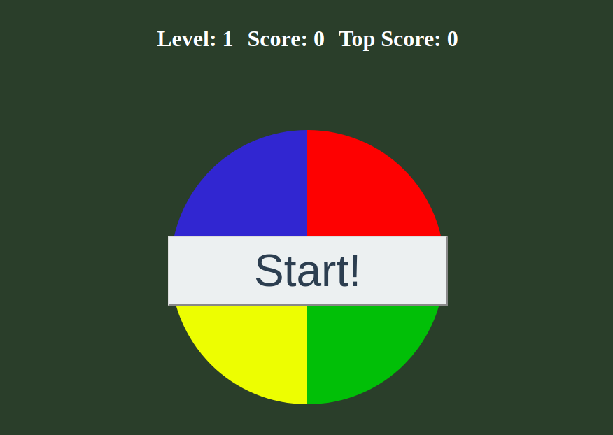
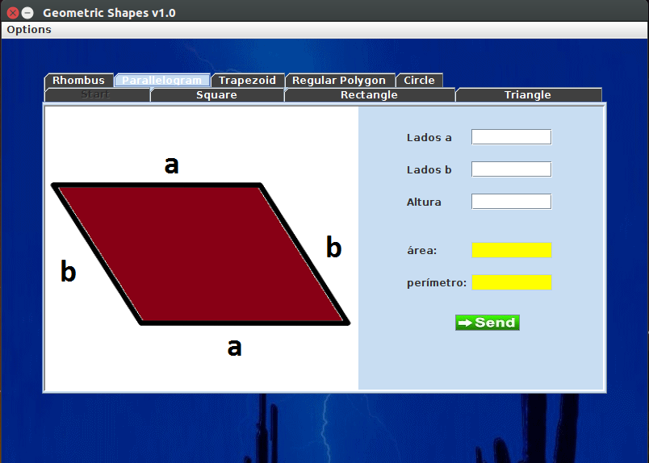
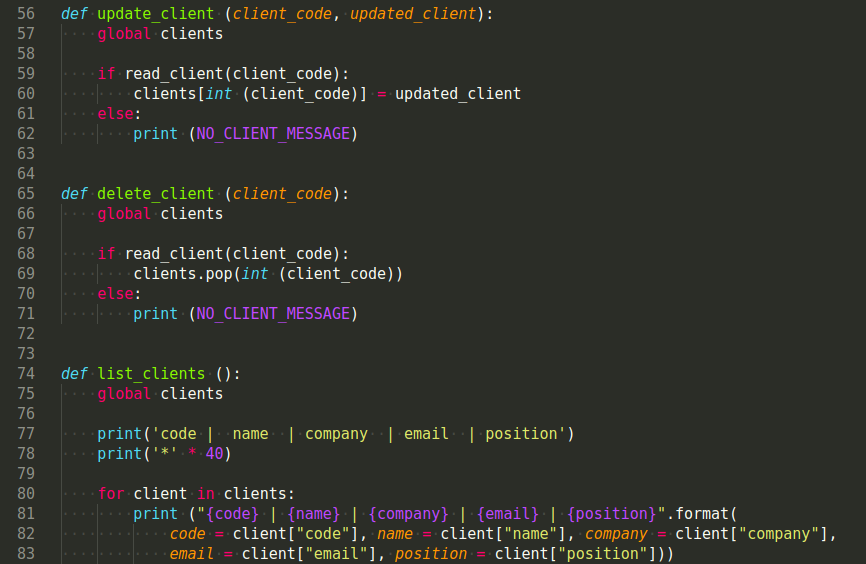

Descripción
Soy Físico de la Universidad de Antioquia y programador aficionado. Me he caracterizado por la tenacidad y el perfeccionismo para alcanzar mis objetivos. Siempre he sentido un excesivo gusto por la programación, por eso me he encargado de estudiarla empíricamente, con miras a poder ejercerla en la profesión de vida. Tengo buen nivel matemático y manejo la programación imperativa y la programación orientada a objetos. He trabajado con lenguajes para maquetado como HTML y CSS, lenguajes de programación como C, C++, Java, Python, JavaScript, y a nivel muy básico, PHP. Cuento con una buena lógica y fundamentos de programación, además de una buena capacidad de autoestudio y aprendizaje rápido, con el fin de aprender cualquier lenguaje requerido.
Proyectos
BigInt.h (C/C++)
BigInt.h es un archivo de cabecera escrito en C y C++ cuyo objetivo es el de operar números astronómicos (números de hasta un millón de dígitos), basado en considerar cada número como una cadena de caracteres. Contiene funciones de comparación y la sobrecarga de los operadores aritméticos, así como de los operadores de comparación y algunos operadores compuestos de asignación. También posee una función para calcular el factorial de dichos números.

Acelerador de partículas (Python)
Este proyecto, escrito en Python, hace uso de la librería VPython 7 para toda la parte visual. Consiste en una simulación sencilla sobre cómo funciona un acelerador lineal de partículas usando una diferencia de potencial. Recibe parámetros como longitud de los tubos que componen el acelerador, número de tubos, voltaje aplicado, carga y masa de la partícula, y por medio de un proceso de extrusión, se dibuja el acelerador. La animación se construye por medio de una relación de proporcionalidad entre la velocidad teórica de la partícula y la velocidad con la cuál se da el cambio de posición de la partícula en la animación. Está escrita usando programación orientada a objetos.


ATM (HTML+CSS+JavaScript)
Aplicación web que muestra un modelo sencillo de cómo funciona el algoritmo para los retiros que se realizan en un cajero, es decir, cómo se deben distribuir los billetes para entregar la cantidad de dinero solicitada. Se usa HTML y CSS para crear la estructura y apariencia de la página web y programación orientada a objetos en JavaScript para hacer los cálculos.

A Memory Game (HTML+CSS+JavaScript)
La aplicación web es un juego de memoria en el cual, dada una secuencia aleatoria de números generada en JavaScript y mostrada por medio de CSS, se debe reproducir exactamente por el usuario. Un nivel N tiene una secuencia de longitud N, el nivel máximo es 50.

Geometric Shapes (Java)
Geometric Shapes es un programa sencillo escrito en Java para el cálculo de áreas y perímetros de polígonos regulares e irregulares. Soporta figuras tales como rombos, paralelogramos, trapezoides, circulos, triángulos, etc. Así como una opción de polígono regular de N lados.

Client's CRUD (Python)
Este es un programa escrito en Python 3 con el fin de, almacenando los datos en un archivo .csv, ser un ejemplo de cómo se construye una aplicación tipo CRUD (create-read-update-delete application) sencilla y óptima. Para la creación y actualización del archivo .csv se usan algunas facilidades de las librerías os, sys y csv de Python.
